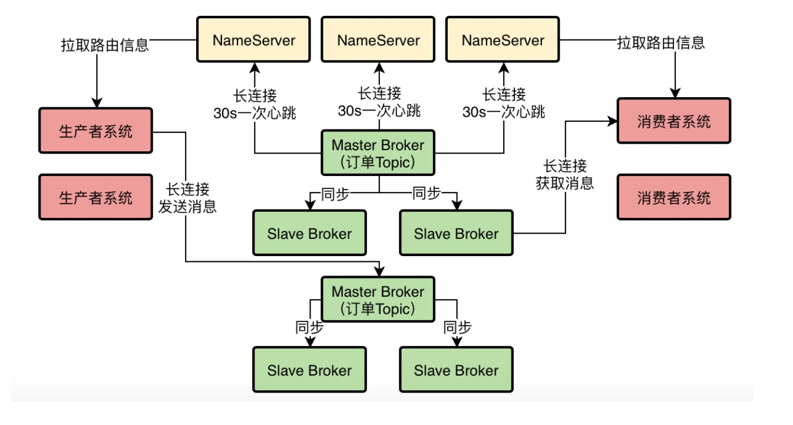
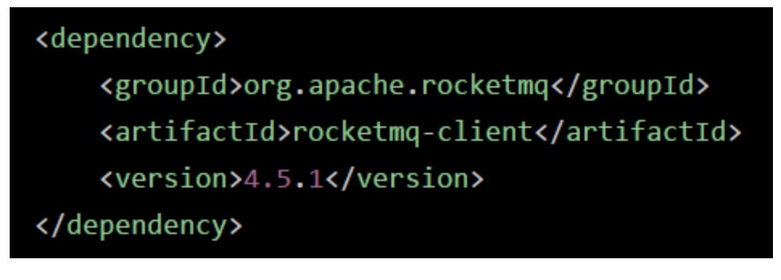
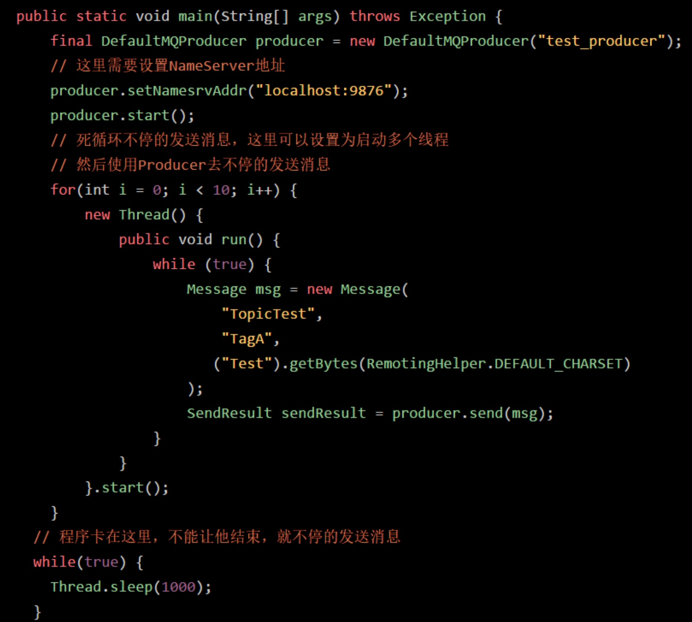
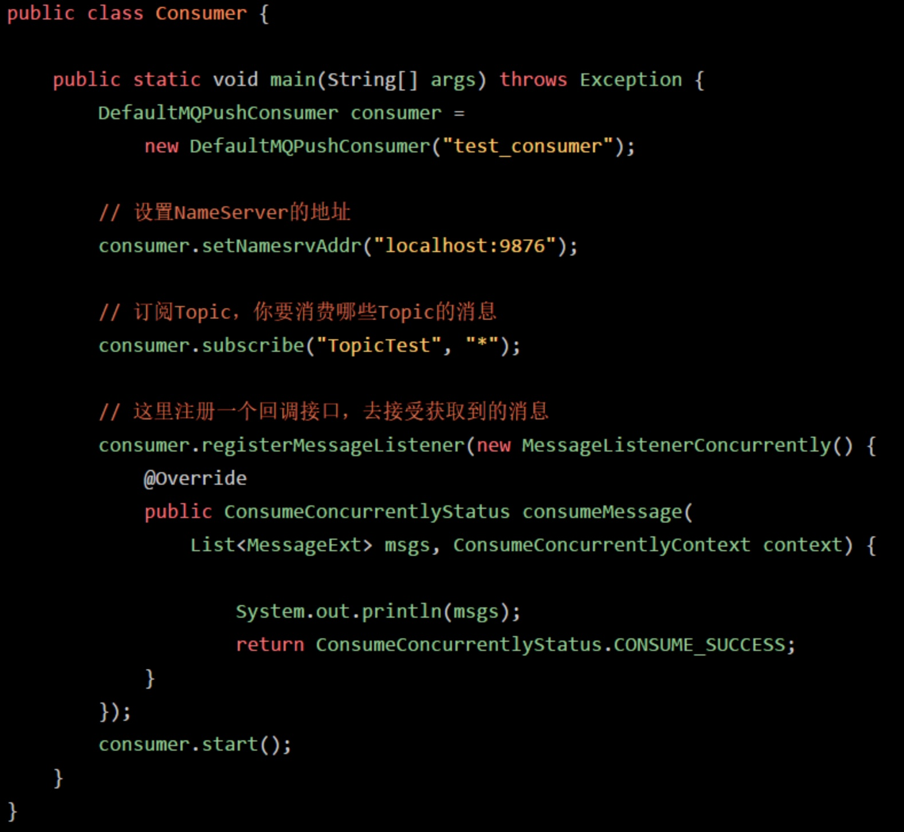

1、小猛的第一个实战任务：部署一个小规模的RocketMQ集群
既然已经完成了RocketMQ生产架构的设计了，接着就得一步一步完成真正的生产集群的部署了，明哥这个时候给小猛布置了第一个实战任务，就是先分配几台机器给小猛，让他完成一个小规模的RocketMQ集群的部署。
这个小规模的RocketMQ集群部署好了之后，还需要对这个集群进行压测，看一看在公司的机器配置下，可以抗下多高的QPS。
小猛接下了这个任务，同时又看了看他之前设计出来的最终生产部署架构图，他知道这个图仅仅是一个逻辑架构图，不是物理部署架构图，但是物理部署架构图得参照这个逻辑架构图才能部署出来。

2、公司给小猛分配的第一批机器
小猛先看了看公司给他分配的第一批机器的各项配置，然后迅速基于这批机器制定了RocketMQ集群部署的规划。
NameServer：3台机器，每台机器都是8核CPU + 16G内存 + 500G磁盘 + 千兆网卡
Broker：3台机器，每台机器都是24核CPU（两颗x86_64 cpu，每颗cpu是12核） + 48G内存 + 1TB磁盘 + 千兆网卡
生产者：2台机器，每台机器都是4核CPU + 8G内存 + 500GB磁盘 + 千兆网卡
消费者：2台机器，每台机器都是4核CPU + 8G内存 + 500GB磁盘 + 千兆网卡
NameServer是核心的路由服务，所以给8核16G的较高配置的机器，但是他一般就是承载Broker注册和心跳、系统的路由表拉取等请求，负载其实很低，因此不需要特别高的机器配置，部署三台也可以实现高可用的效果了。
Broker是最负载最高的，未来要承载高并发写入和海量数据存储，所以把最高配置的机器都会留给他，这里用3台机器组成一个“单Master + 双Slave”的集群。
生产者和消费者机器都是临时用来测试的，而且一般他们都是业务系统，只会部署在标准的4核8G的机器配置下。
所有机器都是千兆网卡，足够他们使用了。
小猛看着自己手头的机器，点点头，可以开始部署了。
3、选择一台机器快速部署RocketMQ尝试一下
首先，小猛的第一步不是一下子就把整个集群部署好，而是先找一台机器准备在上面先快速部署一个RocketMQ尝试一下。
在机器上部署RocketMQ之前，先安装一下JDK，同时要在环境变量中设置Java_HOME，这个小猛很熟练就搞定了。（画外音，如果有不会的同学，可以自己查阅资料）
接着在一台机器上执行了下面的命令来构建Dledger：
git clone https://github.com/openmessaging/openmessaging-storage-dledger.git
cd openmessaging-storage-dledger
mvn clean install -DskipTests
接着小猛在机器上个执行了下面的命令来构建RocketMQ：
git clone https://github.com/apache/rocketmq.git
cd rocketmq
git checkout -b store_with_dledger origin/store_with_dledger
mvn -Prelease-all -DskipTests clean install -U
接着进入一个目录中：
cd distribution/target/apache-rocketmq
在这个目录中，需要编辑三个文件，一个是bin/runserver.sh，一个是bin/runbroker.sh，另外一个是bin/tools.sh
在里面找到如下三行，然后将第二行和第三行都删了，同时将第一行的值修改为你自己的JDK的主目录
[ ! -e “$JAVA_HOME/bin/java” ] && JAVA_HOME=$HOME/jdk/java
[ ! -e “$JAVA_HOME/bin/java” ] && JAVA_HOME=/usr/java
[ ! -e “$JAVA_HOME/bin/java” ] && error_exit “Please set the JAVA_HOME variable in your environment, We need java(x64)!”
注：如果要查看你的JDK装哪儿了，可以用命令：/usr/libexec/java_home -V，修改为你的Java主目录即可
接着执行下面的命令进行快速RocketMQ集群启动：
sh bin/dledger/fast-try.sh start
这个命令会在当前这台机器上启动一个NameServer和三个Broker，三个Broker其中一个是Master，另外两个是Slave，瞬间就可以组成一个最小可用的RocketMQ集群。
接着使用下面的命令检查一下RocketMQ集群的状态：
sh bin/mqadmin clusterList -n 127.0.0.1:9876
此时你需要等待一会儿，这个命令执行的过程会有点缓慢，大概可能几秒到几十秒过后，你会看到三行记录，说是一个RaftCluster，Broker名称叫做RaftNode00，然后BID是0、1、2，也有可能是0、1、3
这就说明的RocketMQ集群启动成功了，BID为0的就是Master，BID大于0的就都是Slave，其实在这里也可以叫做Leader和Follower
接着就可以尝试一下Slave是如何自动切换为Master的了。
我们看到三台机器的地址分别为：
192.168.31.153:30921
192.168.31.153:30911
192.168.31.153:30931
我们发现30921端口的Broker的BID是0，说明他是Master
此时我们可以用命令（lsof -i:30921）找出来占用30921端口的进程PID，接着就用kill -9的命令给他杀了，比如我这里占用30921端口的进程PID是4344，那么就执行命令：kill -9 4344
接着等待个10s，再次执行命令查看集群状态：
sh bin/mqadmin clusterList -n 127.0.0.1:9876
此时就会发现作为Leader的BID为0的节点，变成另外一个Broker了，这就是说Slave切换为Master了。
4、完成正式三台NameServer的部署
其实RocketMQ集群部署并不难，主要就是在几台机器上做好相应的配置，然后执行一些命令启动NameServer和Broker就可以了。
首先是在三台NameServer的机器上，大家就按照上面的步骤安装好Java，构建好Dledger和RocketMQ，然后编辑对应的文件，设置好JAVA_HOME就可以了。
此时可以执行如下的一行命令就可以启动NameServer：
nohup sh mqnamesrv &
这个NameServer监听的接口默认就是9876，所以如果你在三台机器上都启动了NameServer，那么他们的端口都是9876，此时我们就成功的启动了三个NameServer了
5、完成一组Broker集群的部署
接着需要启动一个Master Broker和两个Slave Broker，这个启动也很简单，分别在上述三台为Broker准备的高配置机器上，安装好Java，构建好Dledger和RocketMQ，然后编辑好对应的文件。
接着就可以执行如下的命令：
1 | nohup sh bin/mqbroker -c conf/dledger/broker-n0.conf & |
这里要给大家说一下，第一个Broker的配置文件是broker-n0.conf，第二个broker的配置文件可以是broker-n1.conf，第三个broker的配置文件可以是broker-n2.conf。
对于这个配置文件里的东西要给大家说明一下，自己要做对应的修改。
我们用broker-n0.conf举例子，然后在每个配置项上加入注释，告诉大家应该如何修改每台机器的配置：
这个是集群的名称，你整个broker集群都可以用这个名称
brokerClusterName = RaftCluster
这是Broker的名称，比如你有一个Master和两个Slave，那么他们的Broker名称必须是一样的，因为他们三个是一个分组，如果你有另外一组Master和两个Slave，你可以给他们起个别的名字，比如说RaftNode01
brokerName=RaftNode00
这个就是你的Broker监听的端口号，如果每台机器上就部署一个Broker，可以考虑就用这个端口号，不用修改
listenPort=30911
这里是配置NameServer的地址，如果你有很多个NameServer的话，可以在这里写入多个NameServer的地址
namesrvAddr=127.0.0.1:9876
下面两个目录是存放Broker数据的地方，你可以换成别的目录，类似于是/usr/local/rocketmq/node00之类的
storePathRootDir=/tmp/rmqstore/node00
storePathCommitLog=/tmp/rmqstore/node00/commitlog
这个是非常关键的一个配置，就是是否启用DLeger技术，这个必须是true
enableDLegerCommitLog=true
这个一般建议和Broker名字保持一致，一个Master加两个Slave会组成一个Group
dLegerGroup=RaftNode00
这个很关键，对于每一组Broker，你得保证他们的这个配置是一样的，在这里要写出来一个组里有哪几个Broker，比如在这里假设有三台机器部署了Broker，要让他们作为一个组，那么在这里就得写入他们三个的ip地址和监听的端口号
dLegerPeers=n0-127.0.0.1:40911;n1-127.0.0.1:40912;n2-127.0.0.1:40913
这个是代表了一个Broker在组里的id，一般就是n0、n1、n2之类的，这个你得跟上面的dLegerPeers中的n0、n1、n2相匹配
dLegerSelfId=n0
这个是发送消息的线程数量，一般建议你配置成跟你的CPU核数一样，比如我们的机器假设是24核的，那么这里就修改成24核
sendMessageThreadPoolNums=24
上面说完了这个配置文件在各个Broker上应该如何修改，其实你结合之前学习过的Broker的工作原理，就应该理解这些配置的含义了。
其实最关键的是，你的Broker是分为多组的，每一组是三个Broker，一个Master和两个Slave。
对每一组Broker，他们的Broker名称、Group名称都是一样的，然后你得给他们配置好一样的dLegerPeers（里面是组内三台Broker的地址）
然后他们得配置好对应的NameServer的地址，最后还有就是每个Broker有自己的ID，在组内是唯一的就可以了，比如说不同的组里都有一个ID为n0的broker，这个是可以的。
所以按照这个思路就可以轻松的配置好一组Broker，在三台机器上分别用命令启动Broker即可。启动完成过后，可以跟NameServer进行通信，检查Broker集群的状态，就是如下命令：
sh bin/mqadmin clusterList -n 127.0.0.1:9876。
6、编写最基本的生产者和消费者代码准备压测
接着就可以编写最基本的生产者和消费者代码，准备执行压测了。
可以新建两个工程，一个是生产者，一个是消费者，两个工程都需要加入下面的依赖：

然后生产者的示例代码如下，大家现在不需要知道里面的含义，只要知道他可以发送消息即可，基本的代码说明都写在下面的注释里了
简单来说，就是只要一运行，就立马不停的在while死循环里去发送消息，根据需要可以设置为多个线程：

接着是示例用的消费者代码，如下所示，关键的注释都写在里面了，消费者就是不停的去获取消息然后打印出来即可：

小猛忙活了几天总算弄完了一个小集群，由三个NameServer、三个Broker以及四个业务系统机器组成，他试了一下，Broker都正常运行，请求NameServer可以看到集群信息，而且测试了一下，能够正常的发送消息和接收消息。
一切万事俱备，只欠东风，接下来就要调整Broker的OS内核参数、JVM参数然后重新启动Broker，接着就可以启动生产者和消费者去发送消息和获取消息，然后去观察RocketMQ能承载的QPS，CPU、IO、磁盘、网络等负载。